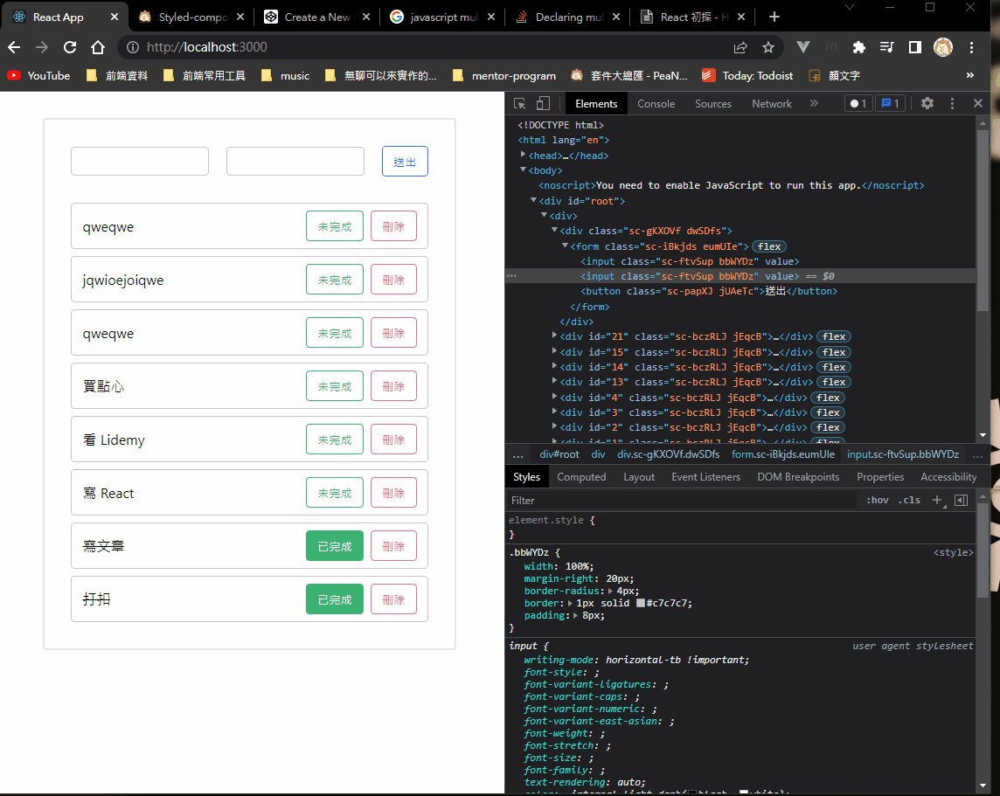

這東西真神奇。
簡述
儘管 React 有提供各種 hooks 給大家用，但你還可以進一步透過這些 hooks 來做出專屬某些用途的 hooks。
例如我想做一個專門處理 input 輸入的 hook，內容可能就會長這樣：
1
2
3
4
5
6
7
8
9
10
11
12
13
|
import { useState } from "react";
export function useInput (deault = null) {
const [inputValue, setInputValue] = useState(deault);
const handleInput = (e) => {
setInputValue(e.target.value);
};
return { inputValue, setInputValue, handleInput }
}
|
接著在 Component 裡就可以直接拿來用：
1
2
3
4
5
6
7
8
9
10
11
12
13
14
15
16
17
18
19
20
21
22
23
24
25
26
27
28
| import { useInput } from '../custom-hooks/useInput';
function TodoHeader({ handleAddTodo }) {
const { inputValue, setInputValue, handleInput } = useInput();
const { inputValue: secondInputValue, setInputValue: secondSetInputValue, handleInput: secondHandleInput } = useInput();
const handleSubmit = (e) => {
e.preventDefault();
handleAddTodo(inputValue);
setInputValue("");
};
return (
<TodoHeaderWrapper onSubmit={handleSubmit}>
<TodoInputBlock>
// 第一個
<Input value={inputValue} onChange={handleInput}></Input>
// 第二個
<Input value={secondInputValue} onChange={secondHandleInput}></Input>
<BlueButton>送出</BlueButton>
</TodoInputBlock>
</TodoHeaderWrapper>
);
}
export default TodoHeader;
|
出來的結果就會像這樣：

這樣子的好處是可以把「共同的邏輯」給抽出來，以及不用跟 UI 綁在一起，畢竟背後的邏輯都是一樣的。
總之，這樣方式可以讓你把「同一個邏輯」套用在「不同的 UI」上，這是我覺得最強大的地方。
如果把這個發揮到極致的話，甚至可以把整個功能拆出去，變得像這樣：
1
2
3
4
5
6
7
8
9
10
11
12
13
14
15
16
17
18
19
20
21
22
23
24
25
26
27
28
29
30
31
32
33
| import TodoItem from "./components/TodoItem";
import TodoHeader from "./components/TodoHeader";
import { useTodos } from "./custom-hooks/todos"
function App() {
const {
id,
todos,
setTodos,
handleAddTodo,
handleRemoveTodo,
handleToggleTodoState,
} = useTodos()
return (
<div>
<TodoHeader handleAddTodo={handleAddTodo}></TodoHeader>
{todos.map((todo) => {
return (
<TodoItem
key={todo.id}
todo={todo}
handleRemoveTodo={handleRemoveTodo}
handleToggleTodoState={handleToggleTodoState}
></TodoItem>
);
})}
</div>
);
}
export default App;
|
這是一個 todo list 的 hook。所有相關的邏輯都寫在 useTodos 中了。
現在 App 只需要關注 UI，跟把對應的方法（handleRemoveTodo 等等那些）綁定對應的事件處理就好，乾乾淨淨！